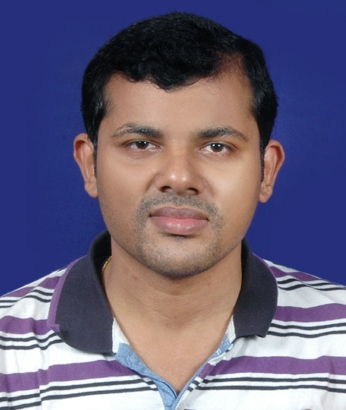

Designed and Developed by Web and Design Team , IIT Bhubaneswar
Follow us at :


The Students' Gymkhana(Established in 2010) is a student body, fostering all student activities at IIT Bhubaneswar and bridging the gap between the students and the authorities.
ABOUT
The Students' Gymkhana is a student body, fostering all student activities at IIT Bhubaneswar and bridging the gap between the students and the authorities. From its genesis in the year 2010, it seeks to cultivate various qualitative approaches amongst students to master an enhanced life.
The Students' Gymkhana is the nucleus of the numerous extra-curricular, technical and co-curricular activities held in IIT Bhubaneswar spanning activities of different genres of sports, cultural and technical fields. It plays a cardinal role in cultivating and nurturing their extra-curricular talents here by encouraging their participation in a number of contrasting events. Gymkhana works towards an aim to bring all round development in the students through their active role in extra-curricular activities to supplement education and advancing the general welfare of our students.
The hierarchy of Students' Gymkhana comprises the President, Students' Senate, an elected representative body and the elected executives: the Vice President, General Secretary Socio-Cultural Council, General Secretary Science and Technology Council, General Secretary Sports Council. The Senate lays down the general guideline for the functions of the executives and their associated councils.
General Elections are held every year during spring for various offices of powers. The elections are presided over by an election commissioner. The Gymkhana Elections and its healthy functioning are done in accordance to the Gymkhana Constitution.
PRESIDENT'S WORD
Indian Institute of Technology, Bhubaneswar, from its humble start in 2008 has come down a long way in its strife to become one of the leading institutes of the country. Achieving this success in this short a journey would have been impossible without the contribution of the students and extensive support of the Students' Gymkhana, the students' representative body.
Established in 2009, the Gymkhana has been efficiently working as an independent, self-governing and democratic organization that has bridged the gap between the students and the administration. From managing various societies catering to different interests and talents of the students, organizing various intra-college co-curricular, technical and sports events and competitions, holding informative workshops, celebrating the festivals at hostels with great fervor and organizing the institute's very own socio-cultural and technical fests, Alma Fiesta and Wissenaire respectively, the Students' Gymkhana has played a commendable role in nurturing the extra-curricular talents of the students, enhancing their personality and cultivating leadership qualities in them to equip them for a successful independent corporate and social life. It gives me immense pride and pleasure to be heading this organization, I congratulate all its members for their achievements so far and extend my support and good wishes to continue these appreciable efforts.

Designed and Developed by Web and Design Team , IIT Bhubaneswar
Follow us at :